Manutenção industrial
Serviços de manutenção industrial para equipamentos e instalações, com foco na continuidade operacional.
Serviços técnicos e engenharia em Moçambique
Manutenção industrial, instalação de equipamentos e equipas técnicas especializadas para apoiar operações em Moçambique.
O que fazemos
A Serviteng trabalha em manutenção e instalação industrial, tubagens, estruturas metálicas, soldadura técnica e projectos de engenharia.
Serviços de manutenção industrial para equipamentos e instalações, com foco na continuidade operacional.
Montagem e desmontagem de estruturas metálicas; soldadura técnica em aço macio, alumínio e aço inox, incluindo tubagens de gás de alta pressão.
Montagem de bombas, válvulas, tubagens e respectivos acessórios.
Consultoria e projectos mecânicos adaptados às necessidades de cada instalação.
Disponibilização de técnicos de soldadura, mecânica e serralharia geral e industrial.
Como trabalhamos
Organizamos cada intervenção em etapas definidas para manter a comunicação clara, reduzir riscos e tornar as entregas mais previsíveis.
Converse sobre o seu projetoCompreender o local e o escopo.
Avaliar requisitos e condições.
Definir recursos, prazos e controlos.
Realizar o trabalho no terreno.
Verificar segurança e qualidade.
Concluir e comunicar os resultados.
Qualidade, ambiente e segurança
A política integrada da Serviteng compromete-se com os requisitos do cliente, a melhoria contínua, a segurança das pessoas e a protecção do ambiente.
Planeamento de risco, EPI, sinalização, procedimentos e controlo da zona de trabalho.
Inspeção visual, controlo dimensional, acabamento e verificação técnica.
Trabalho alinhado às especificações, aos requisitos do cliente e às boas práticas.
Aprendizagem operacional e padronização de processos repetíveis.
Consideração dos impactos ambientais na planificação e execução dos trabalhos.
Portfólio técnico
De tanques de combustível à soldadura de tubagens e montagem de estruturas, conheça trabalhos reais da equipa Serviteng.
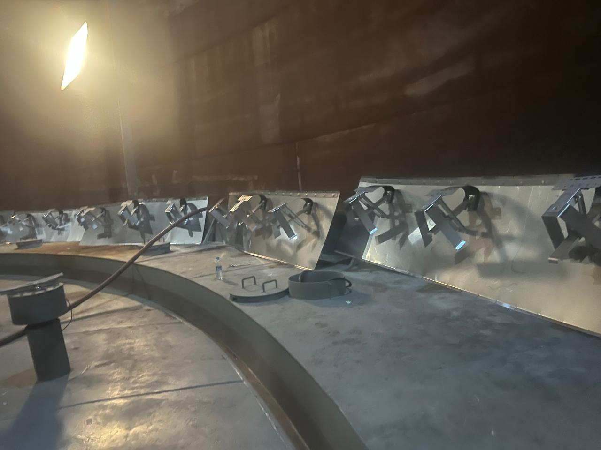
01 / 10Substituição e reparação do vedante instalado no teto flutuante de um tanque de combustível.
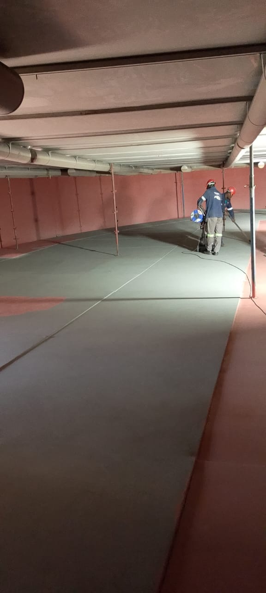
02 / 10Trabalhos de preparação da superfície e pintura no interior do tanque.
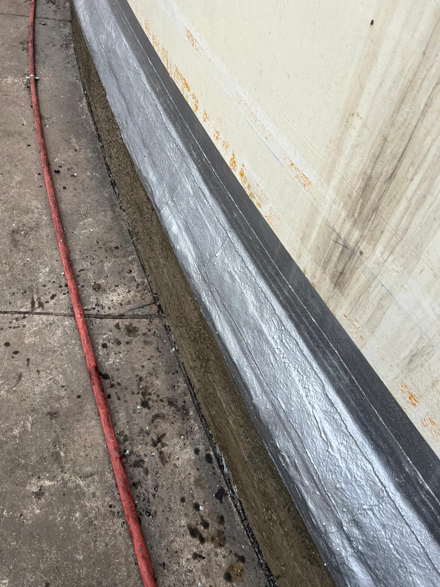
03 / 10Aplicação do sistema Denso Base Protection para proteger a zona crítica da base contra corrosão.
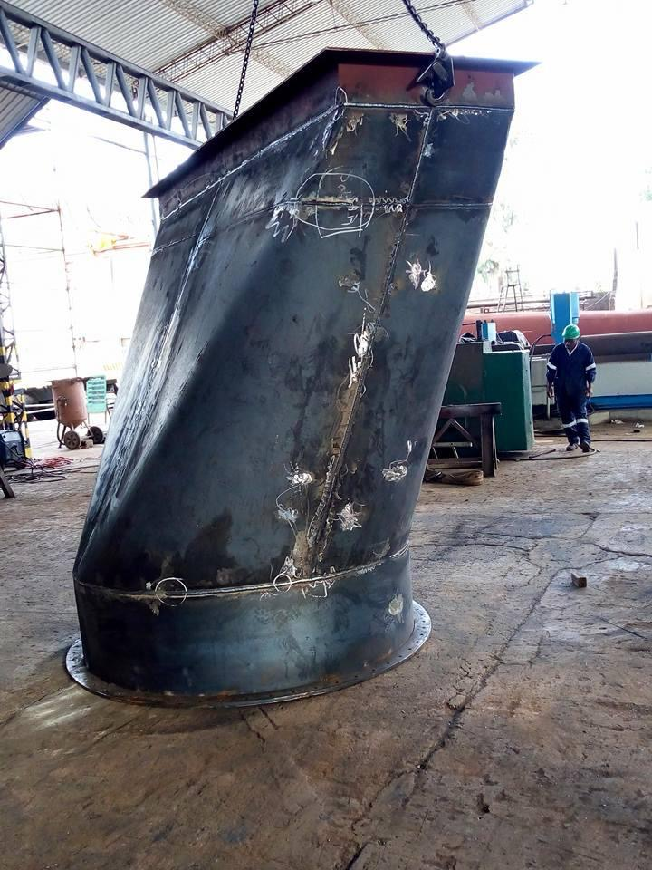
04 / 10Componente metálico de grande porte em fase de fabrico numa oficina.
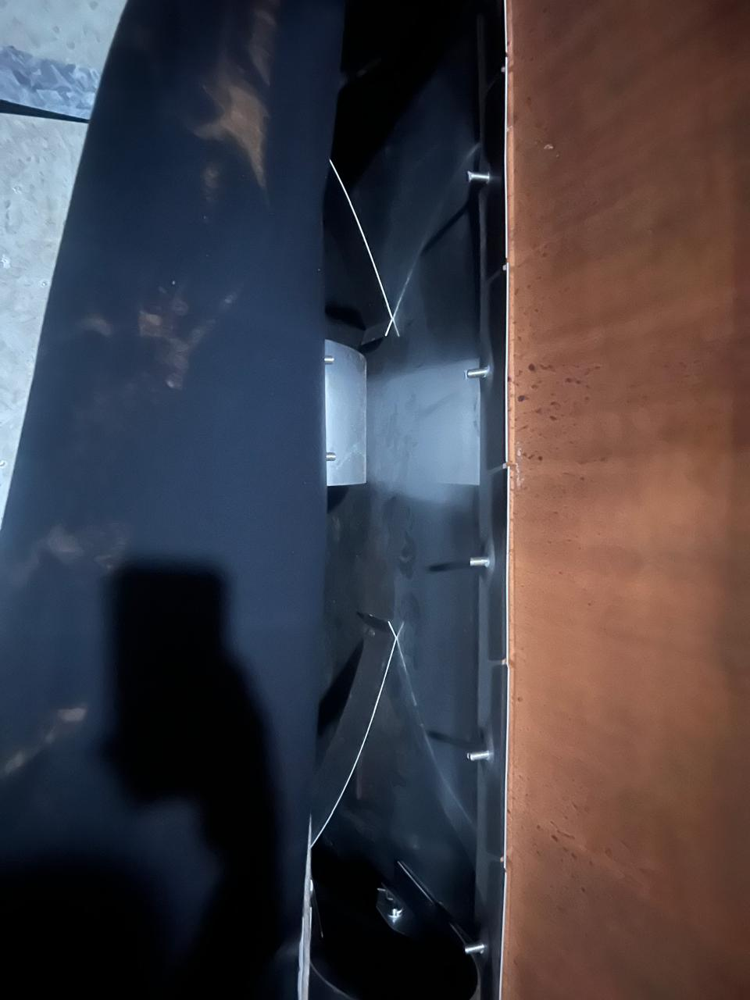
05 / 10Instalação do vedante periférico ao longo da parede interna do tanque.
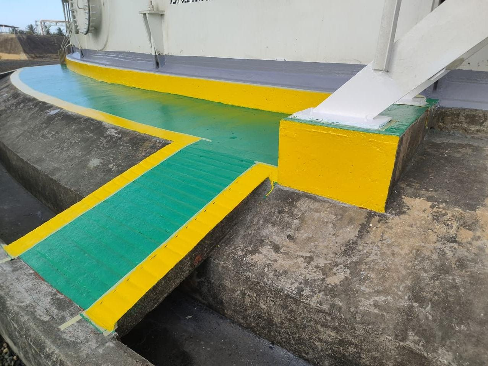
06 / 10Aplicação do revestimento Denso e pintura na zona da base do tanque.
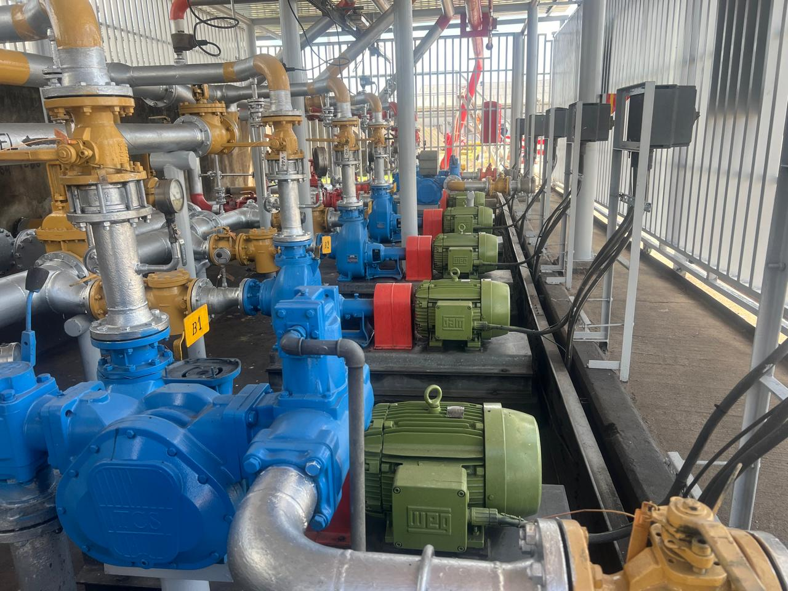
07 / 10Trabalhos de limpeza e pintura na casa de bombas e na área dos equipamentos.
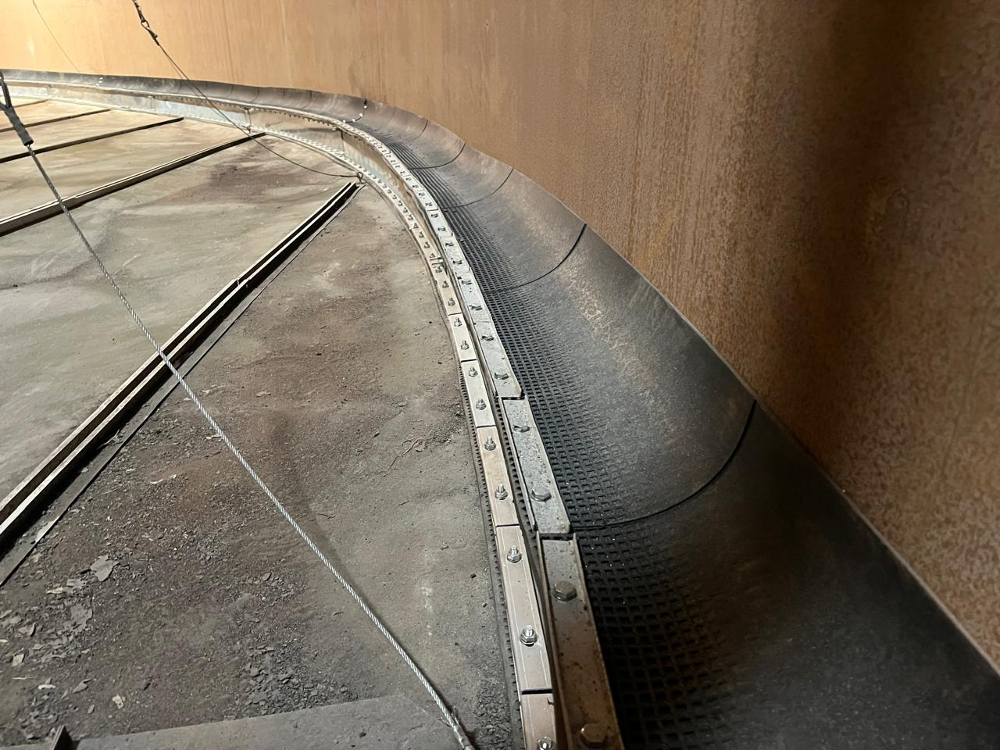
08 / 10Detalhe da instalação do vedante ao longo do perímetro interno do tanque.
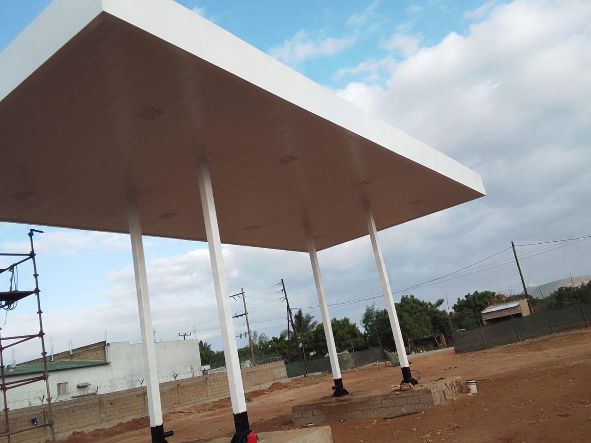
09 / 10Estrutura de cobertura montada sobre pilares metálicos no local da obra.
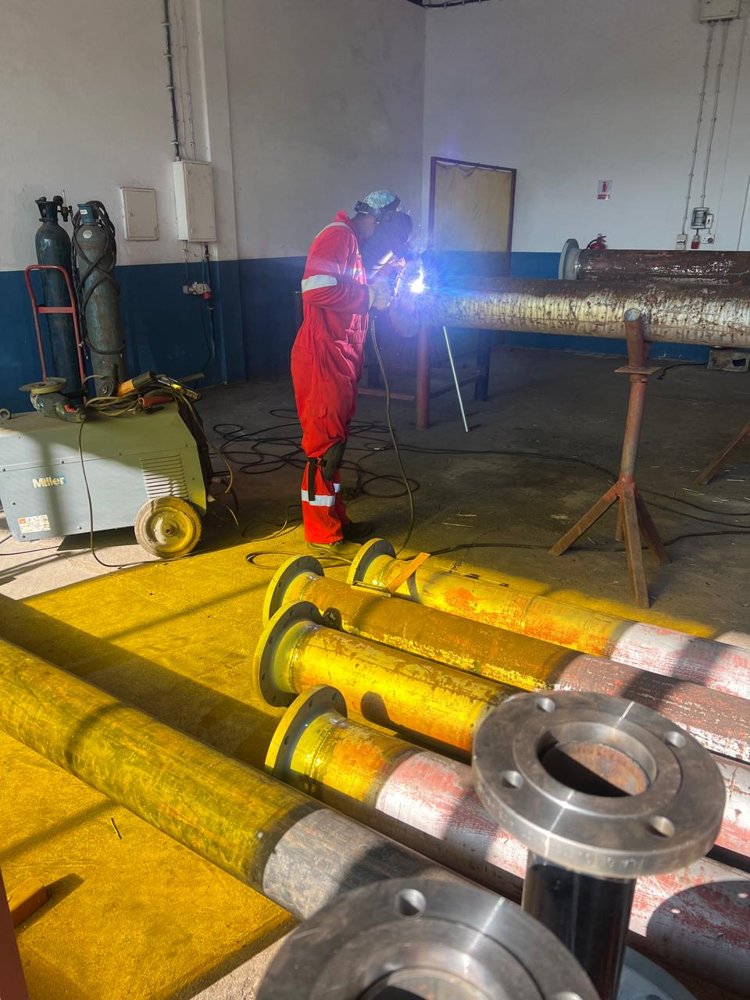
10 / 10Trabalho de soldadura em tubagens e componentes com flanges.
Tem um trabalho semelhante? Vamos avaliar o seu projecto.
Consulte o EngenheiroSobre a Serviteng
Fundada em 2016 na área metalomecânica, a Serviteng actua na manutenção e instalação de equipamentos industriais, tubagens, estruturas metálicas, soldadura e projectos de engenharia.
Referências institucionais
Marcas apresentadas no perfil corporativo da Serviteng.
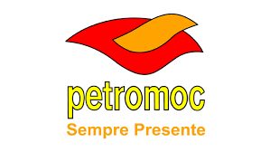
Onde atuamos
Com sede na Matola, atendemos projetos no norte, centro e sul do país.
Obras públicas — 4.ª classe
Categoria Edifícios e Monumentos · Alvará válido até 25 de janeiro de 2027.
Nampula · Nacala Porto
Sofala · Beira · Porto da Beira
Maputo · Matola
Av. Fany Mpfume, n.º 979
Matola, Moçambique
Vamos conversar
Conte-nos do que precisa. A nossa equipa recebe o seu pedido pelo WhatsApp e dará seguimento consigo.